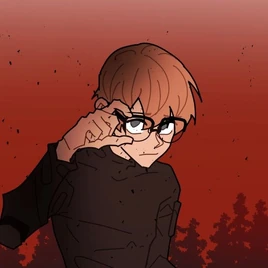

Logan Fields is a protagonist in School Bus Graveyard. He debuted in Episode 1, and is an astronomy loving teenage boy. He's usually seen being bullied by Barron.
Logan is initially timid, shy and jumpy. He got bullied by Barron and his friends up until Tyler threatened to tell on Barron. Logan eventually, due to being exposed to the phantom dimension nightly, realized (With the help of Tyler) that if he had to put up with and face phantoms every night, he could face Barron. So, after being given self-defense training by Mr. and Mrs. Banner, he finally takes Barron down. His personality seems to harden, and he seems much less timid and jumpy than he used to, even taking initiative during a certain situation in one of the fast pass episodes. Ashlyn's leadership skills seem to have rubbed off on Logan at some point.
Logan Fields is a thin boy with an average height, standing at 5'6. He's pale in color, and has diamond blue eyes and black framed glasses. He has thin black eyebrows. He has light reddish brown hair that lays flat on his head, with bangs that cover the majority of his forehead. He's often seen wearing clothes that match the academia aesthetic, or just casualwear such as turtlenecks and jeans. Later in the series, he's seen without his glasses. In the phantom dimension, he can be seen wearing the black protective suit that was purchased by Aiden.